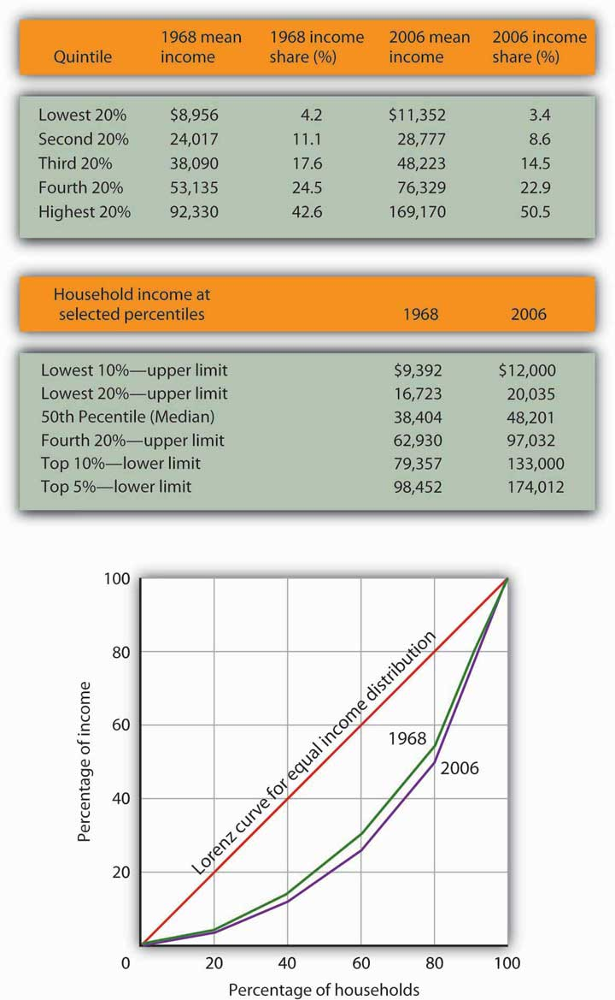

Income inequality in the United States has soared in the last half century. Since 1967, real median household income has risen 30%. For the top 1%, incomes shot up by over 200%. Consider recent experience. Median household-size-adjusted disposable income rose 13% between 1988 and 2004. At the 75th percentile it rose 16%, at the 90th percentile 21%, and at the 95th percentile 27%.Gary Burtless, “Inequality Trends: The Facts and Why They Matter,” Cato Unbound Block Archive, February 20, 2007.
Increasingly, education is the key to a better material life. The gap between the average annual incomes of high school graduates and those with a bachelor’s degree increased by nearly a factor of five between 1975 and 2006. Read that sentence again. The gap went from under $5,000 to over $23,000 per year. That is a phenomenal change in such a short period of time. A special study by the U.S. Census Bureau estimated that compared to the full-time year-around work-life earnings of a high school graduate, a person with a bachelors degree would earn 75% more, while a person with a professional degree would earn almost four times more over their working lifetime.The 40 year synthetic earnings estimates (in $millions of 1999 dollars) are: high school dropout, $1.0; high school graduate, $1.2; Bachelors degree, $2.2; Masters degree, $2.5; Doctoral degree, $3.4; Professional degree, $4.4. Jennifer Cheeseman Day and Eric C. Newburger, “The Big Payoff: Education Attainment and Synthetic Estimates of Work-life Earnings,” U.S. Census Bureau, Current Population Reports (P23-210, July, 2002). Synthetic earnings estimates represent what a typical person with a certain education level could expect to earn over a 40-year worklife. Moreover, education is not an equal opportunity employer. A student from a family in the top quarter of the income distribution is six times more likely to get a college degree than a student whose family is in the bottom quarter of the income distribution.
That inequality perpetuates itself. College graduates marry other college graduates and earn higher incomes. Those who do not go to college earn lower incomes. Some may have children out of wedlock—an almost sure route to poverty. That does not, of course, mean that young people who go to college are assured high incomes while those who do not are certain to experience poverty, but the odds certainly push in that direction.
We shall learn in this section how the degree of inequality can be measured. We shall examine the sources of rising inequality and consider what policy measures, if any, are suggested. In this section on inequality we are essentially focusing the way the economic pie is shared, while setting aside the important fact that the size of the economic pie has certainly grown over time.
We have seen that the income distribution has become more unequal. This section describes a graphical approach to measuring the equality, or inequality, of the distribution of income.
The primary evidence of growing inequality is provided by census data. Households are asked to report their income, and they are ranked from the household with the lowest income to the household with the highest income. The Census Bureau then reports the percentage of total income earned by those households ranked among the bottom 20%, the next 20%, and so on, up to the top 20%. Each 20% of households is called a quintile. The bureau also reports the share of income going to the top 5% of households.
Income distribution data can be presented graphically using a Lorenz curveA curve that shows cumulative shares of income received by individuals or groups., a curve that shows cumulative shares of income received by individuals or groups. It was developed by economist Max O. Lorenz in 1905. To plot the curve, we begin with the lowest quintile and mark a point to show the percentage of total income those households received. We then add the next quintile and its share and mark a point to show the share of the lowest 40% of households. Then, we add the third quintile, and then the fourth. Since the share of income received by all the quintiles will be 100%, the last point on the curve always shows that 100% of households receive 100% of the income.
If every household in the United States received the same income, the Lorenz curve would coincide with the 45-degree line drawn in Figure 18.1 "The Distribution of U.S. Income, 1968 and 2006". The bottom 20% of households would receive 20% of income; the bottom 40% would receive 40%, and so on. If the distribution of income were completely unequal, with one household receiving all the income and the rest zero, then the Lorenz curve would be shaped like a backward L, with a horizontal line across the bottom of the graph at 0% of income and a vertical line up the right-hand side. The vertical line would show, as always, that 100% of families still receive 100% of income. Actual Lorenz curves lie between these extremes. The closer a Lorenz curve lies to the 45-degree line, the more equal the distribution. The more bowed out the curve, the less equal the distribution. We see in Figure 18.1 "The Distribution of U.S. Income, 1968 and 2006" that the Lorenz curve for the United States became more bowed out between 1968 and 2006.
Figure 18.1 The Distribution of U.S. Income, 1968 and 2006
The distribution of income among households in the United States became more unequal from 1968 to 2006. The shares of income received by each of the first four quintiles fell, while the share received by the top 20% rose sharply. The Lorenz curve for 2006 was more bowed out than was the curve for 1968. (Mean income adjusted for inflation and reported in 2006 dollars; percentages do not sum to 100% due to rounding.)
Sources: Carmen DeNavas-Walt, Bernadette D. Proctor, and Cheryl Hill Lee, U.S. Census Bureau, Current Population Reports, P60-229, Income, Poverty, and Health Insurance Coverage in the United States: 2004, U.S. Government Printing Office, Washington, DC, 2005, Table A-3; U.S. Census Bureau, Current Population Survey, 2005 Annual Social and Economic Supplement, Table HINC-05.
The degree of inequality is often measured with a Gini coefficientA measure of inequality expressed as the ratio of the area between the Lorenz curve and a 45° line and the total area under the 45° line., the ratio between the Lorenz curve and the 45° line and the total area under the 45° line. The smaller the Gini coefficient, the more equal the income distribution. Larger Gini coefficients mean more unequal distributions. The Census Bureau reported that the Gini coefficient was 0.397 in 1968 and 0.470 in 2006—the highest ever recorded for the United States.U.S. Census Bureau, Current Population Reports, P60-233, Income, Poverty, and Health Insurance Coverage in the United States: 2006, U.S. Government Printing Office, Washington, D.C.
When we speak of the bottom 20% or the middle 20% of families, we are not speaking of a static group. Some families who are in the bottom quintile one year move up to higher quintiles in subsequent years; some families move down. Because people move up and down the distribution, we get a quite different picture of income change when we look at the incomes of a fixed set of persons over time rather than comparing average incomes for a particular quintile at a particular point in time, as was done in Figure 18.1 "The Distribution of U.S. Income, 1968 and 2006".
Addressing the question of mobility requires that researchers follow a specific group of families over a long period of time. Since 1968, the Panel Survey of Income Dynamics (PSID) at the University of Michigan has followed more than 5,000 families and their descendents. The effort has produced a much deeper understanding of changes in income inequality than it is possible to obtain from census data, which simply take a snapshot of incomes at a particular time.
Based on the University of Michigan’s data, Federal Reserve Bank of Boston economists Katharine Bradbury and Jane Katz compared mobility in the 1970s, 1980s, and 1990s. In the 1970s, just under half the families in the poorest quintile at the start of that decade were still in that quintile at the end of that decade and overall about 32% of families moved up one quintile or more. The mobility figures for the 1980s were about the same as for the 1970s. In the 1990s, however, mobility declined. About 30% of families moved up one quintile or more and 53% of families that started the 1990s in the poorest quintile were still in that quintile at the end of the 1990s. In every decade, some of the movement to higher quintiles results simply from gaining age and experience. The researchers further comment that, for the 1990s, moving across quintiles has become harder to achieve precisely because of the increased income inequality.Katharine Bradbury and Jane Katz, “Issues in Economics: Are Lifetime Incomes Growing More Unequal? Looking at New Evidence on Family Income Mobility,” Regional Review 12:4 (4th Quarter, 2002): 2–5.
Everyone agrees that the distribution of income in the United States generally became more equal during the first two decades after World War II and that it has become more unequal since 1968. While some people conclude that this increase in inequality suggests the latter period was unfair, others want to know why the distribution changed. We shall examine some of the explanations.
Clearly an important source of rising inequality since 1968 has been the sharp increase in the number of families headed by women. In 2006, the median income of families headed by married couples was 2.4 times that of families headed by women with no spouse present. The percentage of families headed by women with no spouse present has more than doubled since 1968 and is thus contributing to increased inequality across households.
Technological change has affected the demand for labor. One of the most dramatic changes since the late 1970s has been an increase in the demand for skilled labor and a reduction in the demand for unskilled labor.
The result has been an increase in the gap between the wages of skilled and unskilled workers. That has produced a widening gap between college- and high-school-trained workers. As we saw earlier, that gap has quintupled in the last few decades.
Technological change has meant the integration of computers into virtually every aspect of production. And that has increased the demand for workers with the knowledge to put new methods to work—and to adapt to the even more dramatic changes in production likely to come. At the same time, the demand for workers who do not have that knowledge has fallen.
Along with new technologies that require greater technical expertise, firms are adopting new management styles that require stronger communication skills. The use of production teams, for example, shifts decision-making authority to small groups of assembly-line workers. That means those workers need more than the manual dexterity that was required of them in the past. They need strong communication skills. They must write effectively, speak effectively, and interact effectively with other workers. Workers who cannot do so simply are not in demand to the degree they once were.
The “intellectual wage gap” seems likely to widen as we move even further into the twenty-first century. That is likely to lead to an even higher degree of inequality and to pose a challenge to public policy for decades to come. Increasing education and training could lead to reductions in inequality. Indeed, individuals seem to have already begun to respond to this changing market situation, since the percentage who graduate from high school and college is rising.
Did tax policy contribute to rising inequality over the past four decades? The tax changes most often cited in the fairness debate are the Bush tax cuts introduced in 2001, 2002, and 2003 and the Reagan tax cuts introduced in 1981.
An analysis of the Bush tax cuts by the Tax Foundation combines the three Bush tax cuts and assumes they occurred in 2003. Table 18.1 "Income Tax Liability Before and After the Bush Tax Cuts" gives the share of total income tax liability for each quintile before and after the Bush tax cuts. It also gives the share of the Bush tax cuts received by each quintile.
Table 18.1 Income Tax Liability Before and After the Bush Tax Cuts
| Quintile | Share of income tax liability before tax cuts | Share of income tax liability after tax cuts | Share of total tax relief |
|---|---|---|---|
| First quintile | 0.5% | 0.3% | 1.2% |
| Second quintile | 2.3% | 1.9% | 4.2% |
| Third quintile | 5.9% | 5.2% | 9.4% |
| Fourth quintile | 12.6% | 11.6% | 17.5% |
| Top quintile | 78.7% | 81.0% | 67.7% |
The share of total tax relief received by the first four quintiles was modest, while those in the top quintile received more than two-thirds of the total benefits of the three tax cuts. However, the share of income taxes paid by each of the first four quintiles fell as a result of the tax cuts, while the share paid by the top quintile rose.
Source: William Ahean, “Comparing the Kennedy, Reagan, and Bush Tax Cuts,” Tax Foundation Fiscal Facts, August 24, 2004.
Tax cuts under George W. Bush were widely criticized as being tilted unfairly toward the rich. And certainly, Table 18.1 "Income Tax Liability Before and After the Bush Tax Cuts" shows that the share of total tax relief received by the first four quintiles was modest, while those in the top quintile garnered more than two-thirds of the total benefits of the three tax cuts. Looking at the second and third columns of the table, however, gives a different perspective. The share of income taxes paid by each of the first four quintiles fell as a result of the tax cuts, while the share paid by the top quintile rose. Further, we see that each of the first four quintiles paid a very small share of income taxes before and after the tax cuts, while those in the top quintile ended up shouldering more than 80% of the total income tax burden. We saw in Figure 18.1 "The Distribution of U.S. Income, 1968 and 2006" that those in the top quintile received just over half of total income. After the Bush tax cuts, they paid 81% of income taxes. On that basis, one might conclude that the Bush tax cuts contributed to equalizing income. Others are quick to point out that those same tax cuts were accompanied by reductions in expenditures for some social service programs designed to help lower income families. Still others point out that the tax cuts contributed to an increase in the federal deficit and, therefore, are likely to have distributional effects over many years and across several generations. Whether these changes increased or decreased fairness in the society is ultimately a normative question.
The method by which the Census Bureau computes income shares has been challenged by some observers. Robert Rector, of the Heritage Foundation, a conservative think tank, notes three flaws in the Census Bureau approach. First, it ignores taxes. Second, it ignores the $750 billion in spending for the poor and elderly. Third, each quintile does not contain the same number of people. The top quintile, for example, contains 70% more people than the bottom quintile because households in the lowest quintile tend to have fewer people than those in the highest quintile. Taking the Census Bureau finding that the top quintile receives 50.1% of total income while the bottom quintile receives 3.4% of income implies that people in the top quintile receive $14.74 for every $1.00 received by people in the bottom quintile. But, Mr. Rector points out that once one adjusts for taxes, transfers, and the unequal number of people in each quintile, that 14.74:1 gap falls to $4.21 in the top quintile for every $1.00 in the bottom. By this accounting, incomes in the United States are not nearly as unequal as reported by the Census Bureau.Robert Rector, “Understanding Poverty and Economic Inequality in the United States,” The Heritage Foundation, Policy Research & Analysis, September 15, 2004. This suggests that more precise measurements may provide more insight into explaining inequality.
The accompanying Lorenz curves show the distribution of income in a country before taxes and welfare benefits are taken into account (curve A) and after taxes and welfare benefits are taken into account (curve B). Do taxes and benefits serve to make the distribution of income in the country more equal or more unequal?
In a fascinating examination of attitudes in the United States and in continental Western Europe, economists Alberto Alesina of Harvard University and George-Marios Angeletos of the Massachusetts Institute of Technology suggest that attitudes about the nature of income earning can lead to quite different economic systems and outcomes concerning the distribution of income.
The economists cite survey evidence from the World Values Survey, which concludes that 71% of Americans, and only 40% of Europeans, agree with the proposition: “The poor could become rich if they worked hard enough.” Further, Americans are much more likely to attribute material success to hard work, while Europeans tend to attribute success to factors such as luck, connections, and even corruption. The result, according to Professors Alesina and Angeletos, is that Americans select a government that is smaller and engages in less redistributive activity than is selected by Europeans. Government in continental Western Europe is 50% larger than in the United States, the tax system in Europe is much more progressive than in the United States, regulation of labor and product markets is more extensive in Europe, and redistributive programs are more extensive in Europe than in the United States. As a result, the income distribution in Europe is much more equal than in the United States.
People get what they expect. The economists derive two sets of equilibria. Equilibrium in a society in which people think incomes are a result of luck, connections, and corruption turns out to be precisely that. And, in a society in which people believe incomes are chiefly the result of effort and skill, they are. In the latter society, people work harder and invest more. In the United States, the average worker works 1,600 hours per year. In Europe, the average worker works 1,200 hours per year.
So, who is right—Americans with their “you get what you deserve” or Europeans with their “you get what luck, connections, and corruption bring you” attitude? The two economists show that people get, in effect, what they expect. European values and beliefs produce societies that are more egalitarian. American values and beliefs produce the American result: a society in which the distribution of income is more unequal, the government smaller, and redistribution relatively minor. Professors Alesina and Angeletos conclude that Europeans tend to underestimate the degree to which people can improve their material well-being through hard work, while Americans tend to overestimate that same phenomenon.
Source: Alberto Alesina and George-Marios Angeletos, “Fairness and Redistribution,” American Economic Review 95:4 (September, 2005) 960–80.
The Lorenz curve showing the distribution of income after taxes and benefits are taken into account is less bowed out than the Lorenz curve showing the distribution of income before taxes and benefits are taken into account. Thus, income is more equally distributed after taking them into account.
Figure 18.3